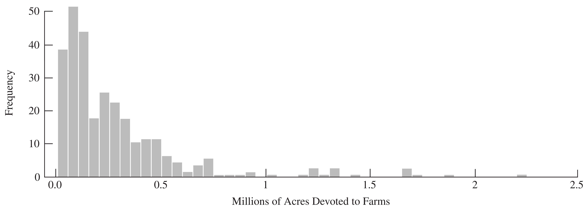

Simple Random Sampling
Textbook sections:
A simple random sample with replacement (SRSWR) of size n from a population of N units can be thought of as drawing n independent samples of size 1.
A simple random sample without replacement (SRS) of size n is selected so that every possible subset of n distinct units in the population has the same probability of being selected as the sample: P(\mathcal S) = \frac{1}{\binom{N}{n}} = \frac{n!(N-n)!}{N!}.
As a consequence, the probability that unit i appears in the sample is \pi_i = n/N.
Using computer-generated random numbers:
sample(1:N, size = n)Define the sample-membership indicator Z_i = \begin{cases} 1 & \text{if unit } i \text{ is in the sample} \\ 0 & \text{otherwise} \end{cases}
If unit i is in the sample, the other n-1 units must come from the remaining N-1 units, so \pi_i = P(Z_i=1) = \frac{\text{number of samples including unit } i}{\text{number of possible samples}} = \frac{\binom{N-1}{n-1}}{\binom{N}{n}} = \frac{n}{N}.
Point estimate: \bar y_{\mathcal S} = \frac1n \sum_{i \in \mathcal S} y_i = \frac1n \sum_{i=1}^N Z_i y_i
Sample variance (estimates the unknown population variance S^2): s^2 = \frac{1}{n-1}\sum_{i\in\mathcal S} (y_i - \bar y)^2
An unbiased estimator of the variance of \bar y: \hat V(\bar y) = \Big(1-\frac nN\Big)\frac{s^2}{n}
Note
The factor \big(1-\tfrac nN\big) is the finite population correction (fpc).
The standard error (SE) is the square root of the estimated variance: \text{SE}(\bar y) = \sqrt{\Big(1-\frac nN\Big)\frac{s^2}{n}}
\hat t = N \bar y \hat V(\hat t) = N^2\Big(1-\frac nN\Big)\frac{s^2}{n} \qquad\qquad \text{SE}(\hat t) = N \cdot \text{SE}(\bar y)
\pi_i = n/N \qquad\qquad w_i = 1/\pi_i = N/n \sum_{i\in\mathcal S} w_i y_i = \sum_{i\in\mathcal S} \frac{N}{n} y_i = \hat t
The CV is a scale-free measure of variability, defined when \bar y_{\mathcal U}\ne 0: \text{CV}(\bar y) = \frac{\sqrt{V(\bar y)}}{E(\bar y)} = \sqrt{1-\frac nN}\ \frac{S}{\sqrt n\, \bar y_{\mathcal U}}
Estimated from a sample (SRS): \widehat{\text{CV}}(\bar y) = \frac{\text{SE}(\bar y)}{\bar y} = \sqrt{1-\frac nN}\ \frac{s}{\sqrt n\, \bar y}
\text{CV}(\hat t) = \sqrt{V(\hat t)}/E(\hat t) is the same as \text{CV}(\bar y).
The U.S. government conducts a Census of Agriculture every five years, collecting data on all farms (any place producing $1000+ of agricultural products) in the 50 states, for each of N=3078 counties/county-equivalents. The file agpop.csv contains 1982, 1987, and 1992 farm data for the whole population.
An SRS of n=300 counties was selected with computer-generated random numbers; this subset is saved in agsrs.csv.
We will estimate the mean and variance of acres92, the number of acres devoted to farms in 1992.
acres92Based on agsrs.csv, with N=3078 and n=300:
\bar y = 297{,}897 \qquad s = 344{,}551.9
\hat t = N\bar y = 916{,}927{,}110
\text{SE}(\bar y) = \sqrt{\frac{s^2}{n}\Big(1-\frac{300}{3078}\Big)} = 18{,}898.434
\text{SE}(\hat t) = (3078)(18{,}898.434) = 58{,}169{,}381
\widehat{\text{CV}}(\hat t) = \widehat{\text{CV}}(\bar y) = \frac{\text{SE}(\bar y)}{\bar y} = \frac{18{,}898.434}{297{,}897} = 0.06344
Since these data are highly skewed, we should also report the median number of farm acres in a county, which is 196,717.
Estimating a proportion is a special case of estimating a mean. Define y_i=1 if unit i has the characteristic of interest and y_i=0 otherwise. Then p = \frac{1}{N}\sum_{i=1}^N y_i = \bar y_{\mathcal U}, \qquad \hat p = \frac1n\sum_{i\in\mathcal S} y_i = \bar y so \hat p is an unbiased estimator of p. For binary y_i, the population variance simplifies to S^2 = \frac{N}{N-1}\,p(1-p).
From the general SRS variance formula, V(\hat p) = \Big(\frac{N-n}{N-1}\Big)\frac{p(1-p)}{n}
The sample variance also simplifies: s^2 = \frac{1}{n-1}\sum_{i\in\mathcal S}(y_i-\hat p)^2 = \frac{n}{n-1}\,\hat p(1-\hat p)
giving the estimated variance \hat V(\hat p) = \Big(1-\frac nN\Big)\frac{\hat p (1-\hat p)}{n-1}
For the sample described above, the estimated proportion of counties with fewer than 200,000 acres in farms is \hat p = \frac{153}{300} = 0.51 with standard error \text{SE}(\hat p) = \sqrt{\Big(1-\frac{300}{3078}\Big)\frac{(0.51)(0.49)}{299}} = 0.0275
In statistics, confidence intervals (CIs) are used to indicate the accuracy of an estimate.
A 95% confidence interval is often explained heuristically: if we take samples from our population over and over again, and construct a CI using our procedure for each possible sample, we expect 95% of the resulting intervals to include the true value of the population parameter.
Hájek’s theorem: if certain technical conditions hold and n, N, and N-n are all “sufficiently large,” then the sampling distribution of \frac{\bar y - \bar y_{\mathcal U}}{\text{SE}(\bar y)} = \frac{\bar y - \bar y_{\mathcal U}}{\sqrt{\big(1-\tfrac nN\big)}\, \tfrac{S}{\sqrt n}} is approximately standard normal. This is the basis for constructing confidence intervals for SRS estimates.
Population mean: \bar y \pm t_{\alpha/2,\, n-1} \cdot \text{SE}(\bar y)
Population total: \hat t \pm t_{\alpha/2,\, n-1} \cdot \text{SE}(\hat t) = N\bar y \pm t_{\alpha/2,\,n-1}\cdot N\cdot \text{SE}(\bar y)
Population proportion: \hat p \pm t_{\alpha/2,\, n-1} \cdot \text{SE}(\hat p)
agsrs.csvUsing t_{\alpha/2,299} = 1.968:
A 95% CI for \bar y_{\mathcal U} (mean acreage): [297{,}897 \pm (1.968)(18{,}898.434)] = [260{,}706,\ 335{,}088]
A 95% CI for the population total t: [916{,}927{,}110 \pm 1.968(58{,}169{,}381)] = [8.02\times10^8,\ 1.03\times10^9]
A 95% CI for the proportion of counties with fewer than 200,000 acres: 0.51 \pm 1.968(0.0275) = [0.456,\ 0.564]

Figure 1: Histogram: number of acres devoted to farms in 1992, for an SRS of 300 counties. Note the skewness of the data. Most of the counties have fewer than 500,000 acres in farms; some counties, however, have more than 1.5 million acres in farms.
Sugden et al. (2000) extend Cochran’s rule for the sample size needed for the normal approximation to be adequate. A recommended minimum: n_{\min} = 28 + 25\left(\frac{\sum_{i=1}^N (y_i-\bar y_{\mathcal U})^3}{N S^3}\right)^{\!2}
The quantity in parentheses is the skewness of the population; larger skewness requires a larger sample for normality to hold.
Substituting sample values s=344{,}551.9 and \sum_{i\in\mathcal S}(y_i-\bar y)^3/n = 1.05036\times10^{17} for the corresponding population quantities: n_{\min} = 28 + 25\left(\frac{1.05036\times10^{17}}{(344{,}551.9)^3}\right)^{\!2} \approx 193
Our sample of size n=300 exceeds n_{\min}\approx193, so it appears sufficiently large for the sampling distribution of \bar y to be approximately normal.
The desired precision is often expressed in absolute terms: P(|\bar y - \bar y_{\mathcal U}| \le e) = 1-\alpha where e is the margin of error. For many surveys of people where a proportion is measured, e=0.03 and \alpha=0.05.
Or in relative terms, controlling the CV: P\left(\left|\frac{\bar y - \bar y_{\mathcal U}}{\bar y_{\mathcal U}}\right| \le r\right) = 1-\alpha \quad\Longrightarrow\quad e = r \cdot \bar y_{\mathcal U}
For example, if \bar y_{\mathcal U}=180K and r=0.1, then e=18K.
To obtain absolute precision e, find n satisfying e = z_{\alpha/2}\sqrt{\Big(1-\frac nN\Big)\frac{S^2}{n}}
First find the sample size n_0 we would use for an infinite population: n_0 = \left(\frac{z_{\alpha/2} S}{e}\right)^{\!2}
Then the fpc-adjusted sample size is n = \frac{n_0}{1+n_0/N} = \frac{z_{\alpha/2}^2 S^2}{e^2 + z_{\alpha/2}^2 S^2/N}
We want to estimate the proportion of recipes in a cookbook (of N=1251 recipes) that don’t involve animal products, using a 95% CI with margin of error 0.03: n_0 = \frac{(1.96)^2 (\tfrac12)(1-\tfrac12)}{(0.03)^2} \approx 1067
Since n_0 is large relative to N=1251, we apply the fpc adjustment: n = \frac{n_0}{1+n_0/N} = \frac{1067}{1+1067/1251} = 576
If N were very large, we would use n\approx n_0 directly.
We took a pilot sample of size 30 (one county missing acres92); the sample SD of the remaining 29 observations was 519,085. With a desired margin of error of 60,000:
n_0 = (1.96)^2\,\frac{519{,}085^2}{60{,}000^2} \approx 288
With N=3078: n = \frac{n_0}{1+n_0/N} = \frac{288}{1+288/3078} \approx 263
We took a sample of size 300 in case the pilot’s estimated SD was too low.
In the randomization theory (design-based) approach, the y_i’s are considered fixed but unknown numbers; the random variables Z_i indicate which population units are in the sample: \bar y = \sum_{i\in\mathcal S} \frac{y_i}{n} = \sum_{i=1}^N Z_i \frac{y_i}{n}
The randomness in \bar y comes entirely from Z_1,\ldots,Z_N; the values y_1,\ldots,y_N are treated as fixed constants.
Since \{Z_1,\ldots,Z_N\} are identically distributed Bernoulli random variables with \pi_i = P(Z_i=1) = \frac{n}{N} = \frac{\binom{N-1}{n-1}}{\binom{N}{n}}, \qquad P(Z_i=0) = 1-\frac nN we get E[Z_i] = E[Z_i^2] = \frac nN V(Z_i) = E[Z_i^2] - (E[Z_i])^2 = \frac nN - \Big(\frac nN\Big)^2 = \frac nN\Big(1-\frac nN\Big)
E[\bar y] = E\left[\sum_{i=1}^N Z_i \frac{y_i}{n}\right] = \sum_{i=1}^N E[Z_i]\frac{y_i}{n} = \sum_{i=1}^N \frac{n}{N}\cdot\frac{y_i}{n} = \sum_{i=1}^N \frac{y_i}{N} = \bar y_{\mathcal U}
This shows \bar y is an unbiased estimator of \bar y_{\mathcal U}.
Because the population is finite, the Z_i’s are not independent: knowing unit i is in the sample gives information about unit j. For i\ne j, E[Z_iZ_j] = P(Z_j=1\mid Z_i=1)\,P(Z_i=1) = \frac{n-1}{N-1}\cdot\frac nN \text{Cov}(Z_i,Z_j) = E[Z_iZ_j]-E[Z_i]E[Z_j] = -\frac{1}{N-1}\Big(1-\frac nN\Big)\Big(\frac nN\Big)
This negative covariance is the source of the finite population correction.
Using \text{Cov}(Z_i,Z_j) and V(Z_i), V(\bar y) = \frac{1}{n^2}\left[\sum_{i=1}^N y_i^2\, V(Z_i) + \sum_{i=1}^N\sum_{j\ne i} y_i y_j\,\text{Cov}(Z_i,Z_j)\right]
Substituting the expressions above and simplifying: V(\bar y) = \frac1n\Big(1-\frac nN\Big)\frac{1}{N(N-1)}\left[N\sum_{i=1}^N y_i^2 - \Big(\sum_{i=1}^N y_i\Big)^2\right] = \Big(1-\frac nN\Big)\frac{S^2}{n}
E\left[\sum_{i\in\mathcal S}(y_i-\bar y)^2\right] = E\left[\sum_{i\in\mathcal S}(y_i-\bar y_{\mathcal U})^2\right] - n\,V(\bar y) = \frac nN \sum_{i=1}^N (y_i - \bar y_{\mathcal U})^2 - \Big(1-\frac nN\Big)S^2 = \frac{n(N-1)}{N}S^2 - \frac{N-n}{N}S^2 = (n-1)S^2
Therefore E\left[\frac{1}{n-1}\sum_{i\in\mathcal S}(y_i-\bar y)^2\right] = E[s^2] = S^2